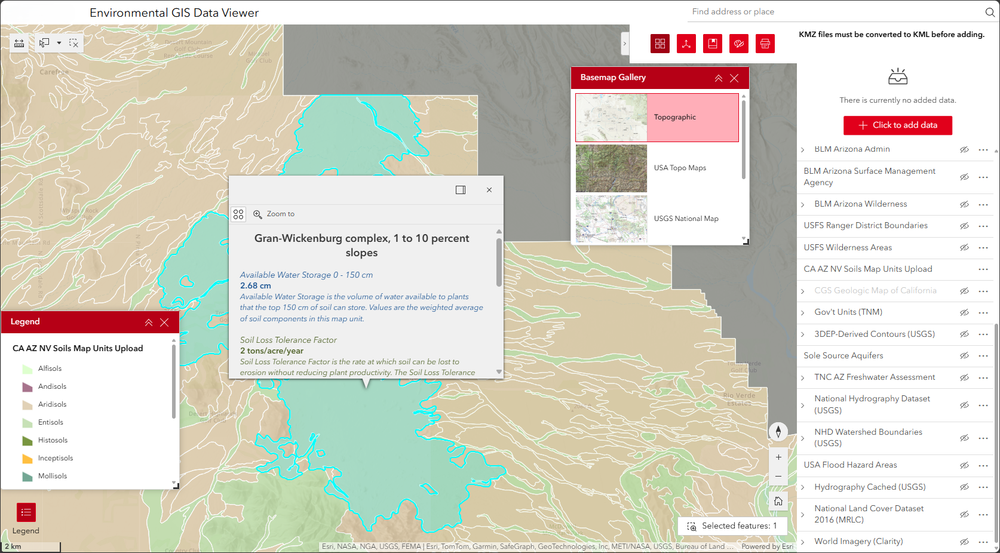

Portfolio
Mergin Maps, Python, & JavaScript: Umm Al-Jimal Web GIS Application
During my masters program at CSULB, I worked with the Umm Al-Jimal historical site in Jordan to help create a data system for archeological field workers. Field workers are able to add and edit data through the Mergin Maps mobile app on iPads. The web app's backend then directly accesses the data through the Mergin Maps server, converts it to GeoJSON with Geopandas, then serves it through FastAPI. The frontend uses Leaflet.js to allow the user to explore and interact with data.
The web app's GitHub page can be viewed here.
During my masters program at CSULB, I worked with the Umm Al-Jimal historical site in Jordan to help create a data system for archeological field workers. Field workers are able to add and edit data through the Mergin Maps mobile app on iPads. The web app's backend then directly accesses the data through the Mergin Maps server, converts it to GeoJSON with Geopandas, then serves it through FastAPI. The frontend uses Leaflet.js to allow the user to explore and interact with data.
The web app's GitHub page can be viewed here.

Field Maps & Maps SDK for JavaScript: Travel Map
Simple ArcGIS Maps SDK for JavaScript application where I upload pictures from my trips with the locations shown on a map. I started by using the Geotagged Photos to Points tool in ArcGIS Pro to create a point feature class from photos taken on my iPhone over the years and uploading the feature class to ArcGIS Online. I add new photos by using the Field Maps mobile app. The popups include an Arcade expression to convert coordinates to DMS format. The app can be viewed by clicking "Travel Map" in the menu above.
Simple ArcGIS Maps SDK for JavaScript application where I upload pictures from my trips with the locations shown on a map. I started by using the Geotagged Photos to Points tool in ArcGIS Pro to create a point feature class from photos taken on my iPhone over the years and uploading the feature class to ArcGIS Online. I add new photos by using the Field Maps mobile app. The popups include an Arcade expression to convert coordinates to DMS format. The app can be viewed by clicking "Travel Map" in the menu above.

ArcMap: Sea Level Rise in East Asia
For my final project in GEOG 482, I made a map showing projected changes in coastlines in East Asia in the event of all ice on Earth melting. I made this map in ArcMap and created a polygon of all areas below USGS's estimated sea level rise of 260 feet using a DEM of East Asia. DEM was from USGS and label data was from Natural Earth.
For my final project in GEOG 482, I made a map showing projected changes in coastlines in East Asia in the event of all ice on Earth melting. I made this map in ArcMap and created a polygon of all areas below USGS's estimated sea level rise of 260 feet using a DEM of East Asia. DEM was from USGS and label data was from Natural Earth.

Python: Convert PLS-CADD LiDAR Points to Contour Lines
This is the source code for an ArcGIS Pro script tool which takes a LiDAR shapefile exported from PLS-CADD and creates contour lines with it. I created this script tool to speed up a task that I previously had to do manually while working at a previous company. Because PLS-CADD exports LiDAR as shapefiles rather than LAS files, I used LAS tools in a system command prompt to convert to LAS to get the point spacing, allowing me to delineate the TIN, preventing me from having to clip the final contour manually.
This is the source code for an ArcGIS Pro script tool which takes a LiDAR shapefile exported from PLS-CADD and creates contour lines with it. I created this script tool to speed up a task that I previously had to do manually while working at a previous company. Because PLS-CADD exports LiDAR as shapefiles rather than LAS files, I used LAS tools in a system command prompt to convert to LAS to get the point spacing, allowing me to delineate the TIN, preventing me from having to clip the final contour manually.
import arcpy
import os
def lidar_process(in_lidar, final_out):
# Place lidar points in correct geographic coordinates with XY table to point
xy_result = r"C:\GitHub\arcpy-scripts\LidarToTopo\temp_data.gdb\xy_result"
arcpy.management.XYTableToPoint(in_table=in_lidar, out_feature_class=xy_result, x_field="longitude", y_field="latitude")
# Project lidar points to correct state plane projection
proj_result = r"C:\GitHub\arcpy-scripts\LidarToTopo\temp_data.gdb\proj_result"
sr = sp_project(in_points=xy_result, out_proj=proj_result)
arcpy.management.Delete(xy_result)
# Create a TIN with projected lidar
tin_result = r"C:\GitHub\arcpy-scripts\LidarToTopo\temp_data\tin_result"
arcpy.ddd.CreateTin(out_tin=tin_result, spatial_reference=sr, in_features=f"{proj_result} Z")
arcpy.management.Delete(proj_result)
# Get point spacing to delineate TIN and remove outside areas
max_edge = get_ps(in_lidar) * 4
arcpy.ddd.DelineateTinDataArea(in_tin=tin_result, max_edge_length=max_edge)
# Create raster from TIN
ras_result = r"C:\GitHub\arcpy-scripts\LidarToTopo\temp_data.gdb\ras_result"
arcpy.ddd.TinRaster(in_tin=tin_result, out_raster=ras_result, sample_distance="CELLSIZE", sample_value=1)
arcpy.management.Delete(tin_result)
# Create contour lines from raster
con_result = r"C:\GitHub\arcpy-scripts\LidarToTopo\temp_data.gdb\con_result"
arcpy.sa.Contour(in_raster=ras_result, out_polyline_features=con_result, contour_interval=10)
arcpy.management.Delete(ras_result)
# Smooth final contour lines
arcpy.cartography.SmoothLine(in_features=con_result, out_feature_class=final_out, algorithm="PAEK", tolerance=10)
arcpy.management.Delete(con_result)
return
def sp_project(in_points, out_proj):
state_plane = r"C:\GitHub\arcpy-scripts\LidarToTopo\temp_data.gdb\CA_State_Plane_Zones"
# Perform summarize within tool to find number of lidar points in each state plane
sum_within = r"C:\GitHub\arcpy-scripts\LidarToTopo\temp_data.gdb\sum_within"
arcpy.analysis.SummarizeWithin(in_polygons=state_plane, in_sum_features=in_points, out_feature_class=sum_within)
# Get state plane zone with highest number of lidar points
fields = ['ZONE', 'Point_Count']
allvalues = [row for row in arcpy.da.SearchCursor(sum_within, fields)]
proj_zone = max(allvalues, key=lambda x: x[1])[0]
arcpy.management.Delete(sum_within)
# Dictionary for returning full state plane projection name
coor_sys = {
"CA_1": "NAD 1983 StatePlane California I FIPS 0401 (US Feet)",
"CA_2": "NAD 1983 StatePlane California II FIPS 0402 (US Feet)",
"CA_3": "NAD 1983 StatePlane California III FIPS 0403 (US Feet)",
"CA_4": "NAD 1983 StatePlane California IV FIPS 0404 (US Feet)",
"CA_5": "NAD 1983 StatePlane California V FIPS 0405 (US Feet)",
"CA_6": "NAD 1983 StatePlane California VI FIPS 0406 (US Feet)"
}
# Project lidar points to state plane zone with most points within it
out_coor_sys = arcpy.SpatialReference(coor_sys[proj_zone])
arcpy.management.Project(in_dataset=in_points, out_dataset=out_proj, out_coor_system=out_coor_sys)
return out_coor_sys
def get_ps(lidar_points):
# Run LAStools shp2las in OS system
las_result = r"C:\GitHub\arcpy-scripts\LidarToTopo\temp_data\las_result.las"
las_com = fr"C:\GitHub\arcpy-scripts\LidarToTopo\LAStools\bin\shp2las.exe -i {lidar_points} -o {las_result}"
os.system(las_com)
# Run LAS dataset statistics to return point spacing
arcpy.management.LasDatasetStatistics(las_result)
ps = arcpy.Describe(las_result).pointSpacing
arcpy.management.Delete(las_result)
return ps
if __name__ == "__main__":
in_lidar = arcpy.GetParameterAsText(0)
final_out = arcpy.GetParameterAsText(1)
lidar_process(in_lidar, final_out)
Experience Builder: Environmental Data Viewer
Experience Builder app built for non GIS employees to easily view environmental GIS data on a map, as well as import their own KML data. Building this app with ArcGIS Enterprise allowed for all company employees to view the app without needing ArcGIS credentials thanks to single sign on. Employees previously viewed environmental data as KML files in Google Earth, which was significantly slower.
Experience Builder app built for non GIS employees to easily view environmental GIS data on a map, as well as import their own KML data. Building this app with ArcGIS Enterprise allowed for all company employees to view the app without needing ArcGIS credentials thanks to single sign on. Employees previously viewed environmental data as KML files in Google Earth, which was significantly slower.

Python: Wildfire Risk Analysis Script Tool
This is the source code for an ArcGIS Pro script tool made to automate the process of analyzing wildfire risk in a user-defined area. The user then inputs a number of layers to be used as risk factors, meaning areas within certain distances of these features will have higher levels of risk, and weights for these layers, which multiply their overall risk. The tool then adds those risks with land use and elevation data to calculate a final risk score raster of the area. This tool is meant to be portable, so it doesn't reference local file paths, instead using land use and elevation data from the Living Atlas.
This is the source code for an ArcGIS Pro script tool made to automate the process of analyzing wildfire risk in a user-defined area. The user then inputs a number of layers to be used as risk factors, meaning areas within certain distances of these features will have higher levels of risk, and weights for these layers, which multiply their overall risk. The tool then adds those risks with land use and elevation data to calculate a final risk score raster of the area. This tool is meant to be portable, so it doesn't reference local file paths, instead using land use and elevation data from the Living Atlas.
import arcpy
def main_process(cdp, gdb, ocs, rff, wgt, srr, final_out):
# Set user specified workspace and output coordinate system
arcpy.AddMessage("Setting up environment...")
arcpy.env.workspace = gdb
arcpy.env.outputCoordinateSystem = ocs
# Create study area with buffer of user inputted community boundaries
study_area = "study_area"
arcpy.analysis.Buffer(in_features=cdp, out_feature_class=study_area, buffer_distance_or_field="0.5 Miles", dissolve_option="ALL")
arcpy.env.extent = study_area
arcpy.env.mask = study_area
# Bring in elevation service and set it as the snap raster
try:
arcpy.management.MakeImageServerLayer(in_image_service="https://elevation.arcgis.com/arcgis/rest/services/NED30m/ImageServer", out_imageserver_layer="dem", cell_size=30.0)
except Exception:
arcpy.AddError("Could not connect to ArcGIS Online. Make sure you're connected to the internet.")
arcpy.management.Delete(study_area)
return
arcpy.env.snapRaster = "dem"
# Create list of risk score rasters based on user defined risk factor feature classes
risk_rast = []
for fc in rff:
fl = arcpy.management.MakeFeatureLayer(in_features=fc, out_layer="fl")
fc_name = arcpy.Describe(fl).name
arcpy.AddMessage(f"Analyzing risk for {fc_name}...")
temp_name = f"eucdist_{fc_name}"
out_euc_dist = arcpy.sa.EucDistance(in_source_data=fl, cell_size="30")
out_euc_dist.save(temp_name)
rmp_rng = arcpy.sa.RemapRange([[0, 250, 3], [250.01, 500, 2], [500.01, 1000, 1], [1000.01, arcpy.Raster(temp_name).maximum, 0]])
final_name = arcpy.sa.Reclassify(in_raster=temp_name, reclass_field="Value", remap=rmp_rng)
final_name.save(f"{fc_name}_Risk")
risk_rast.append(final_name)
arcpy.management.Delete(temp_name)
# Create land cover risk score raster
arcpy.AddMessage("Analyzing risk for land cover...")
try:
arcpy.management.MakeImageServerLayer(in_image_service="https://landscape10.arcgis.com/arcgis/rest/services/USA_NLCD_Land_Cover/ImageServer", out_imageserver_layer="nlcd")
rmp_val = arcpy.sa.RemapValue([[11, 0], [12, 0], [21, 1], [22, 1], [23, 1], [24, 0], [31, 0], [41, 3], [42, 5], [43, 4], [52, 4], [71, 3], [81, 3], [82, 1], [90, 1], [95, 1]])
nlcd_risk = arcpy.sa.Reclassify(in_raster="nlcd", reclass_field="Value", remap=rmp_val)
nlcd_risk.save("NLCD_Risk")
risk_rast.append(nlcd_risk)
except Exception:
arcpy.AddWarning("Final calculation does not include land cover due to an unexpected error. Check to make sure your internet connection is stable.")
# Create slope risk score raster
arcpy.AddMessage("Analyzing risk for slope...")
try:
arcpy.management.MakeImageServerLayer(in_image_service="https://elevation.arcgis.com/arcgis/rest/services/NED30m/ImageServer", out_imageserver_layer="slope", cell_size=30.0, processing_template="Slope_Percent")
slope_rmp_rng = arcpy.sa.RemapRange([[0, 10, 0], [10, 30, 1], [30, 50, 2], [50, 70, 3], [70, 1000, 4]])
slope_risk = arcpy.sa.Reclassify(in_raster="slope", reclass_field="Value", remap=slope_rmp_rng)
slope_risk.save("Slope_Risk")
risk_rast.append(slope_risk)
except Exception:
arcpy.AddWarning("Final calculation does not include slope due to an unexpected error. Check to make sure your internet connection is stable.")
# Create aspect risk score raster
arcpy.AddMessage("Analyzing risk for aspect...")
try:
arcpy.management.MakeImageServerLayer(in_image_service="https://elevation.arcgis.com/arcgis/rest/services/NED30m/ImageServer", out_imageserver_layer="aspect", cell_size=30.0, processing_template="Aspect")
aspect_rmp_rng = arcpy.sa.RemapRange([[-1, 45, 0], [45, 135, 1], [135, 225, 3], [225, 315, 2], [315, 360, 0]])
aspect_risk = arcpy.sa.Reclassify(in_raster="aspect", reclass_field="Value", remap=aspect_rmp_rng)
aspect_risk.save("Aspect_Risk")
risk_rast.append(aspect_risk)
except Exception:
arcpy.AddWarning("Final calculation does not include aspect due to an unexpected error. Check to make sure your internet connection is stable.")
# Add risk values to create final risk score raster
arcpy.AddMessage("Calculating overall risk...")
in_names = []
expression = ""
for i in range(len(risk_rast)):
in_name = f"rast{i}"
in_names.append(in_name)
if i > 0:
expression += "+"
expression += in_name
if i < len(wgt):
expression += f"*{wgt[i]}"
final_raster = arcpy.sa.RasterCalculator(rasters=risk_rast, input_names=in_names, expression=expression)
final_raster.save(final_out)
# Reset environment
arcpy.ResetEnvironments()
# Delete individual risk rasters if user doesn't specify to save them
if srr == False:
arcpy.AddMessage("Removing individual risk rasters...")
arcpy.management.Delete(risk_rast)
arcpy.AddMessage("Process complete.")
if __name__ == "__main__":
in_cdp = arcpy.GetParameterAsText(0)
in_gdb = arcpy.GetParameterAsText(1)
in_ocs = arcpy.GetParameterAsText(2)
table = arcpy.ValueTable(2)
table.loadFromString(arcpy.GetParameterAsText(3))
in_rff = [table.getValue(i, 0) for i in range(0, table.rowCount)]
in_wgt = [float(table.getValue(i, 1)) for i in range(0, table.rowCount)]
in_srr = bool(arcpy.GetParameterAsText(4))
final_out = arcpy.GetParameterAsText(5)
main_process(in_cdp, in_gdb, in_ocs, in_rff, in_wgt, in_srr, final_out)